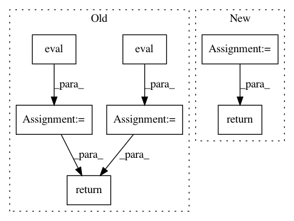

f80a02568837f1966ad3b1be9c15bd11f90677e0,tensorlayer/layers.py,,initialize_rnn_state,#Any#,84
Before Change
if isinstance(state, tf.nn.rnn_cell.LSTMStateTuple):
// when state_is_tuple=True for LSTM
c = state.c.eval()
h = state.h.eval()
return (c, h)
// state.c = state.c.eval()
// state.h = state.h.eval()
// return state
else:
After Change
// return (c, h)
// print(state)
// print(state[0])
new_state = state
new_state[0].assign(state[0].eval())
new_state[1].assign(state[1].eval())
// state[0] = state[0].eval()
// state[1] = state[1].eval()
// state.c = state.c.eval()
// state.h = state.h.eval()
return new_state
else:
// when state_is_tuple=False for LSTM
// or other RNNs
new_state = state.eval()
In pattern: SUPERPATTERN
Frequency: 3
Non-data size: 7
Instances
Project Name: tensorlayer/tensorlayer
Commit Name: f80a02568837f1966ad3b1be9c15bd11f90677e0
Time: 2016-07-27
Author: haodong@dyn1227-186.wlan.ic.ac.uk
File Name: tensorlayer/layers.py
Class Name:
Method Name: initialize_rnn_state
Project Name: NervanaSystems/nlp-architect
Commit Name: bf6adcde668eefc374338ad639765f0de44e38e6
Time: 2018-07-08
Author: amit.yaccobi@intel.com
File Name: nlp_architect/models/np_semantic_segmentation.py
Class Name: NpSemanticSegClassifier
Method Name: eval
Project Name: rusty1s/pytorch_geometric
Commit Name: e7512f6bd434ef89296298a8bd16044917d7ce68
Time: 2020-09-23
Author: matthias.fey@tu-dortmund.de
File Name: examples/gcn2.py
Class Name:
Method Name: test